SYDE 671: Advanced Computer Vision • University of Waterloo
Jerry Kang
Part 1: Fun with Filters
Part 1.1: Convolutions from Scratch
Prepare the image: Add zero padding and flip the kernel once before visiting the image pixels.
Four-loop version: At each pixel, loop over the kernel rows and columns, multiplying each weight by its corresponding image value and accumulating the result.
Two-loop version: Take an image patch the size of the kernel, multiply the two arrays, and sum with NumPy. This replaces the two inner loops.
Four-Loop Implementation
Two-Loop Implementation
Padding and Boundary Handling
Padding allows the filters to reach the image boundaries without shrinking the output. The box filter needs four rows or columns of zeros on each side; the difference filters need one along their filtering direction. This introduces some border effects: the box-filtered selfie darkens at the frame, and the difference filters respond to the jump between the photograph and the zeros.
The selfie was converted to grayscale and reduced to 240×320 pixels to keep the four-loop runtime manageable. The box filter softens the face and background, while the difference filters pick out changes across the hair, face, and clothing.
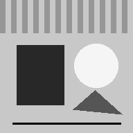
Grayscale Selfie
Original grayscale input.
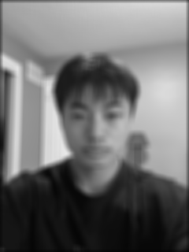
9×9 Box Filter
Averages neighboring intensities to blur the image.
For a fair comparison, SciPy uses the same output size and zero padding. The table compares the computed arrays directly, before saving them as images.
Filter
Implementation
Runtime (ms)
Max Absolute Error
For the box filter, replacing the inner loops with NumPy gives a noticeable speedup. That advantage disappears with the much smaller difference kernels, where creating and summing a patch costs more than the few multiplications in the loops. SciPy is faster in all three cases.
Part 1.2: Finite Difference Operator
Partial derivatives: Apply Dx and Dy from 1.1 to the grayscale cameraman image. Here, the border is mirrored to avoid introducing a jump to black outside the photograph.
Gradient magnitude: Square the two derivative images, add them, and take the square root to combine horizontal and vertical changes.
Binary edges: Keep pixels whose magnitude exceeds the threshold and discard the rest.
Cameraman
Original grayscale input.
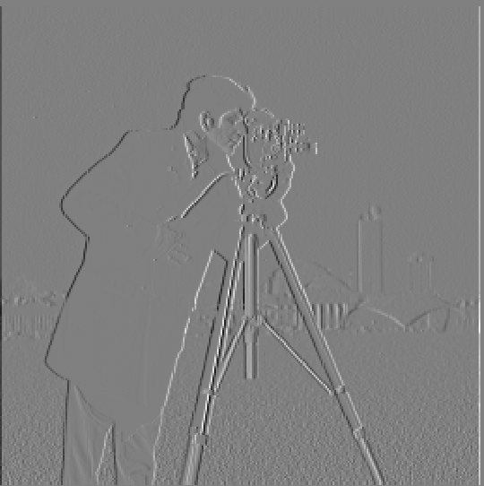
Partial Derivative in x
Vertical boundaries, including the tripod legs.
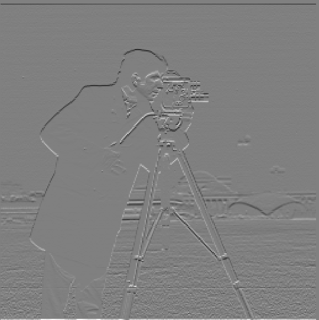
Partial Derivative in y
Horizontal boundaries in the camera and background.
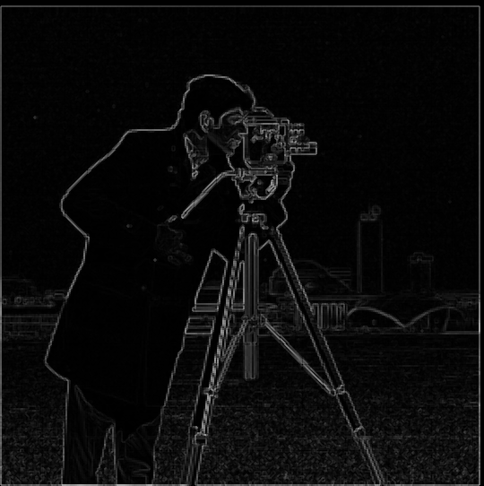
Gradient Magnitude
Edge strength across both directions.
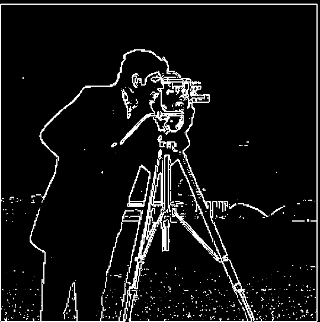
Binary Edge Image
Threshold: 0.2.
Threshold Selection
At 0.1, much of the grass texture survives alongside the subject. At 0.3, the background is cleaner, but weaker parts of the subject and tripod outlines begin to break up. We kept 0.2 as a compromise: the main outlines remain, although the ground is still noisy.
The grass and background texture in 1.2 produce many responses that are not useful as object boundaries. To reduce these, the image is first blurred with a 9×9 Gaussian, using σ = 2. The kernel comes from the outer product of a 1D kernel returned by cv2.getGaussianKernel. The same derivative, magnitude, and thresholding steps are then applied to the blurred image.
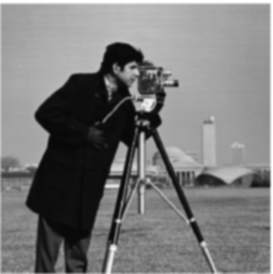
Blurred Cameraman
Blurred before computing the derivatives.
Derivative of Gaussian Filters
For the second approach, convolve the Gaussian kernel with Dx and Dy first, then apply those combined filters directly to the original image. Using full convolution when building the kernels keeps their outer coefficients instead of cutting them off.
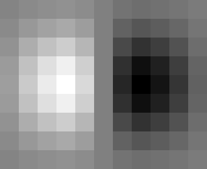
DoG in x
9×11 kernel.
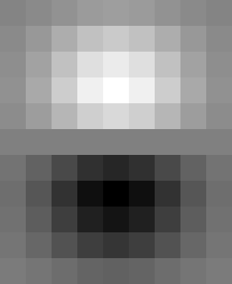
DoG in y
11×9 kernel.
Smoothed Partial Derivatives
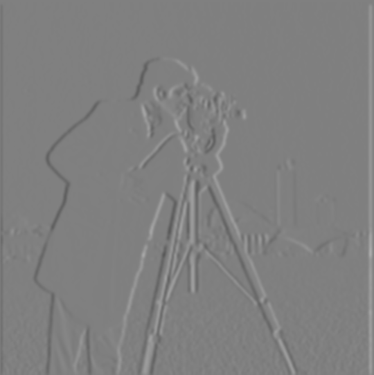
Gaussian then Dx
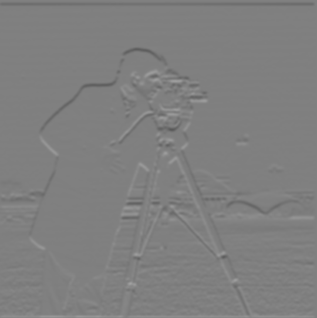
Gaussian then Dy
Two Convolutions vs. One DoG Convolution
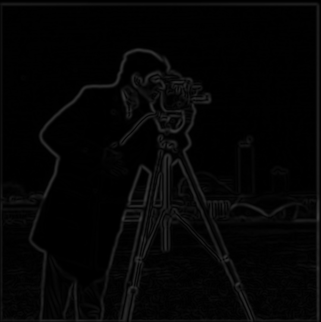
Two-Stage Gradient Magnitude
DoG Gradient Magnitude
To check whether combining the filters changes the result, both approaches use the same symmetrically padded input and crop back to the original size only after filtering. The padding covers the reach of both filters, so neither approach uses the artificial outer boundary. Cropping and padding again between the two stages would change the boundary values and could make otherwise equivalent filters disagree near the edges.
The largest differences are for x, for y, and for magnitude. These are at floating-point rounding level, and the binary edge images differ at pixels. The combined filters therefore reproduce the two-step result in this comparison.
Comparison with the Finite Difference Method
Finite Differences (1.2)
Threshold: 0.2.
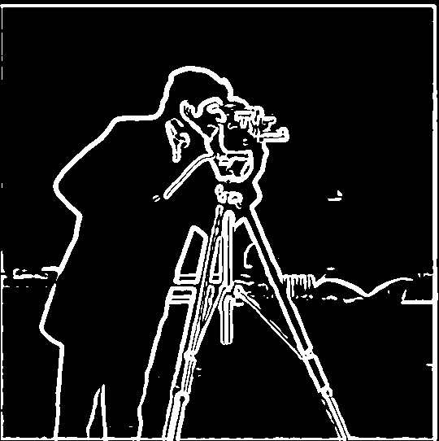
Gaussian + Finite Differences (1.3)
Threshold: 0.08.
After smoothing, much of the grass texture disappears and the subject's outline becomes more continuous. The edges are also wider, and some fine camera details are lost. Keeping the old threshold of 0.2 would discard too much because smoothing weakens the gradients. Of 0.05, 0.08, and 0.12, 0.08 retains the main camera and tripod outlines without bringing back much of the ground texture.
Bells & Whistles: Gradient Orientations
Calculate direction: Use the smoothed x/y derivatives from 1.3. Divide the smaller derivative magnitude by the larger so only an angle between 0° and 45° needs to be approximated. Skip the division where both derivatives are zero.
Approximate the angle: Use a 12-term alternating arctangent series. For ratios above tan(22.5°), replace the ratio r with (r − 1)/(r + 1), then add 45° back after the approximation. This keeps the series input small enough to converge quickly.
Recover the direction: If the y derivative has the larger magnitude, subtract the angle from 90°. Use the signs of the x and y derivatives to place it in the correct quadrant, then wrap it to a full turn. No built-in angle function is needed.
Assign colors: Map the resulting direction to hue, keep saturation at one, and use gradient magnitude for brightness. Weak responses stay dark so flat areas do not compete with the visible edges.
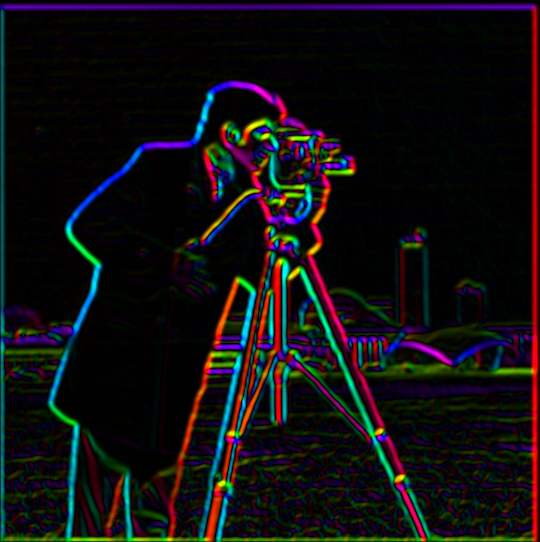
Gradient Orientations in HSV
Gaussian-smoothed gradients from 1.3; color shows direction and brightness shows strength.
The two sides of a tripod leg often have different colors: one side changes from dark to light, while the other changes back. Around the head and shoulders, the color follows the changing direction of the outline. The key uses image coordinates, so angles increase clockwise from the right.
Part 2: Fun with Frequencies
Part 2.1: Image Sharpening
Blur: Apply a 9×9 Gaussian with σ = 2 to each color channel. This retains the broad shading and suppresses fine detail.
Extract detail: Subtract the blur from the original. The remainder contains the edges and texture weakened by the Gaussian.
Sharpen: Add a multiple of that remainder back to the original. The amount α controls how strongly the existing detail is emphasized.
To perform this in one convolution, the implemented kernel is K = (1 + alpha) * delta - alpha * G, where delta is one at the center and zero elsewhere. This combines the original-image contribution and the subtracted Gaussian blur in a single filter.
Taj Mahal and Sharpening Strength
Original
Gaussian Blur
Low frequencies.
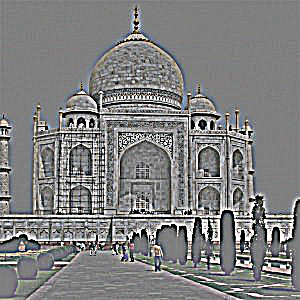
High Frequencies
Detail removed by the blur; contrast increased for visibility.
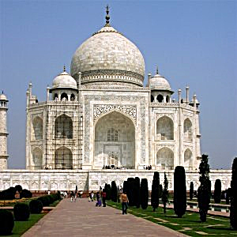
α = 1
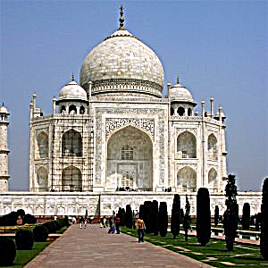
α = 2
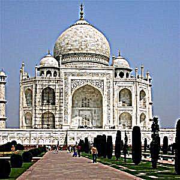
α = 4
At α = 1, the dome and facade gain some definition. Increasing to 2 makes the detail clearer, but by 4 the bright and dark borders around the building and trees look excessive. We used 2 for the custom example as well, to compare the same settings on a different kind of detail.
Custom Image
The same settings were applied to the dog photograph. This gives a second example with fine fur texture and a softer, out-of-focus background.
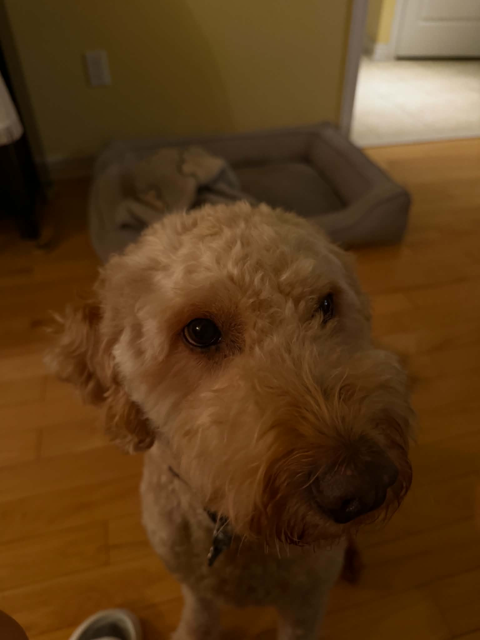
Original
Gaussian Blur
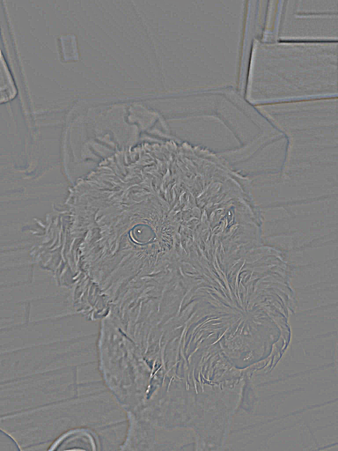
High Frequencies
Contrast increased to make the detail visible.
Sharpened, α = 2
The fur and the edges around the eyes and nose become more pronounced. The soft background stays soft; increasing edge contrast there does not bring it into focus.
Blur Then Sharpen
For the recovery experiment, the dog photo was first blurred with the Gaussian, then the blurred version was sharpened with α = 2. Compare the result below with both the blurred input and the original above.
Blurred Input
Blurred Then Sharpened
α = 2.
The stronger edges make the result look less blurry, but the fine fur texture does not return to its original appearance. This was a useful limit of the method: sharpening can emphasize what remains after blurring, but it is not an inverse of the blur.
Part 2.2: Hybrid Images
Align: Select two matching landmarks in each image. Scale the second image to match the landmark spacing, rotate to match the line between them, and translate to bring the landmarks together. Resample with bilinear interpolation, without a separate anti-alias filter, then crop both images to an area with valid content from each.
Keep the broad structure: Gaussian-blur the first image to retain its low frequencies.
Keep the detail: Subtract a Gaussian-blurred copy from the second image to retain its high frequencies.
Combine: Add the two filtered images. Check the result close up and at a smaller viewing size, adjusting the blur scales if either source overwhelms the other.
Derek + Nutmeg
The eyes provide corresponding landmarks for Derek and Nutmeg. Derek supplies the low frequencies with σ = 5, while Nutmeg supplies the detail with σ = 2. Up close, the whiskers and fur are noticeable; reducing the image size makes Derek's face easier to read.
Derek
Low-frequency source.
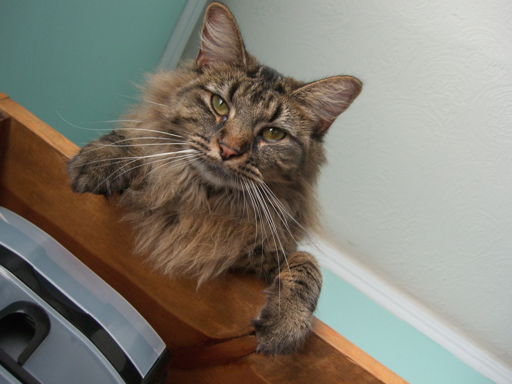
Nutmeg
High-frequency source.
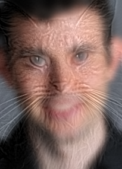
Derek + Nutmeg
Selected hybrid.
Custom Pair 1: Person + Dog
The person/dog pair is used for the detailed analysis because the two eye positions can be matched reasonably well. The person's face provides the broad structure, while the dog's fur supplies the detail. Matching the eyes does not match the different nose and mouth shapes: the alignment scales and rotates the whole image, so it cannot adjust individual facial features.
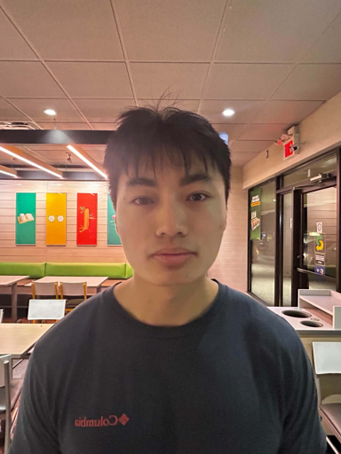
Original A: Person
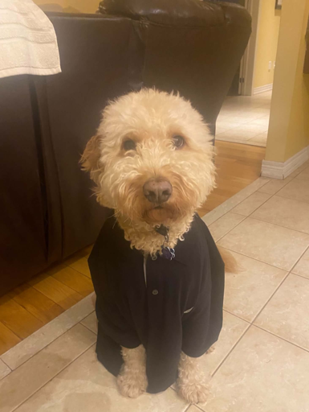
Original B: Dog
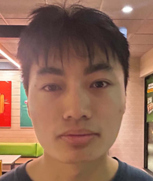
Aligned and Cropped A
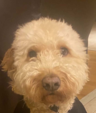
Aligned and Cropped B
For the low-pass image, scales of 3, 5, and 7 were compared. At 5 and 7, too much of the person's face is lost at a small viewing size, so we kept 3. For the high-pass image, 1 leaves the fur rather faint, while 3 retains more of the dog's muzzle and starts to dominate the face. A scale of 2 works better between these two cases.
Low-Pass Person
σ = 3; color retained.
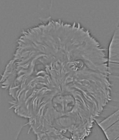
High-Pass Dog
σ = 2; luminance detail. Contrast increased to make the fur detail visible.
Final Hybrid and Color Comparison
Color in the low-frequency image works better for this pair: the skin tones help the person remain recognizable when the image is small, while the grayscale fur still contributes detail nearby. With color in both bands, the dog's fur becomes more prominent. Color only in the high band adds colored edges, but loses the broad skin tones that help the distant view. The low-band color version was retained.
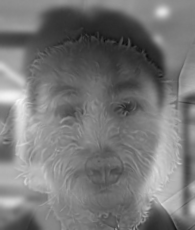
Both Bands Grayscale
Selected: Low-Band Color
Color person + grayscale dog detail.
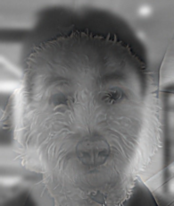
High-Band Color
Grayscale person + color dog detail.
Both Bands Color
Frequency Analysis
For this pair, the Fourier transform is calculated for both aligned inputs, both filtered images, and the final hybrid. The magnitudes are shown logarithmically so weaker frequencies remain visible, with the low frequencies moved to the center. All five use the same contrast scale for comparison. After low-pass filtering, much of the outer detail is suppressed; the high-pass residual removes much of the central low-frequency content. The hybrid combines the two.
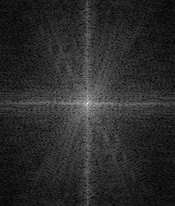
Aligned Person Spectrum
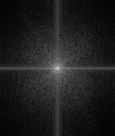
Aligned Dog Spectrum
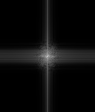
Low-Pass Spectrum
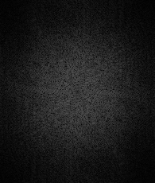
High-Pass Spectrum
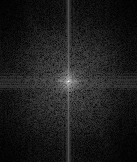
Hybrid Spectrum
Custom Pair 2: Cat + Squirrel
Matching the eyes is not practical here because the squirrel is in profile. Instead, the head and torso positions are used to bring the animals to a similar position and scale. The cat supplies the low frequencies (σ = 3), and the squirrel supplies the high frequencies (σ = 1). The smaller high-pass scale keeps the squirrel's broad head shape and surrounding foliage from dominating as strongly.
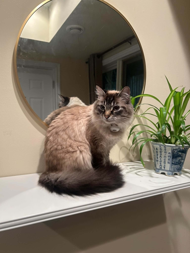
Original A: Cat
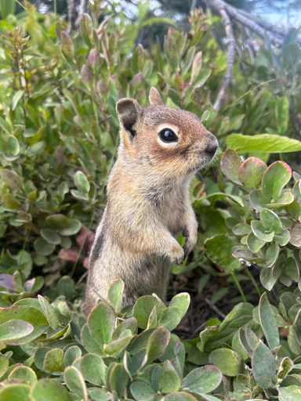
Original B: Squirrel
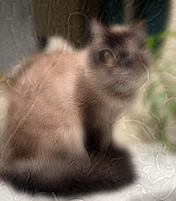
Cat + Squirrel
This pair does not switch as cleanly as the face examples. The squirrel's profile and the leaves remain noticeable over the cat's frontal face. Making the image smaller favors the cat's body shape, but changing the filter scales cannot fully compensate for the different poses and backgrounds.
Part 2.3: Gaussian and Laplacian Stacks
Gaussian stack: Start with the original image, then blur the previous level using σ = 2, 4, 8, 16, and 32. All six levels keep the same dimensions; the increasing blur separates fine texture from broader shading without downsampling.
Convolution: Build each Gaussian from a 1D kernel extending three standard deviations on either side, then filter along rows and columns separately, reflecting the image at the borders. This gives the same filtering as the corresponding 2D kernel at a lower cost.
Laplacian stack: Subtract the next, more blurred Gaussian image from each level. Keep the last Gaussian as well, since the differences alone would lose the broad color and shading needed to reconstruct the image.
Gaussian Stacks
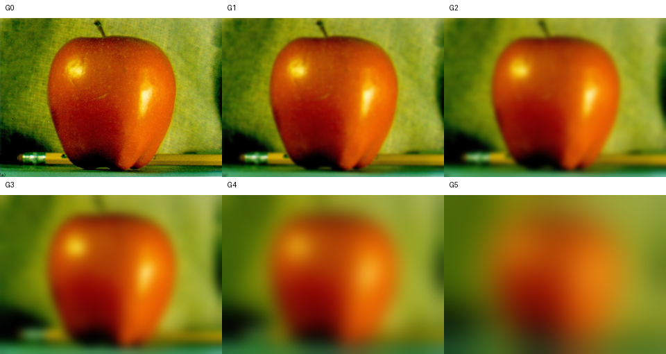
Apple Gaussian Stack
G0–G5, from the original to the coarsest blur.
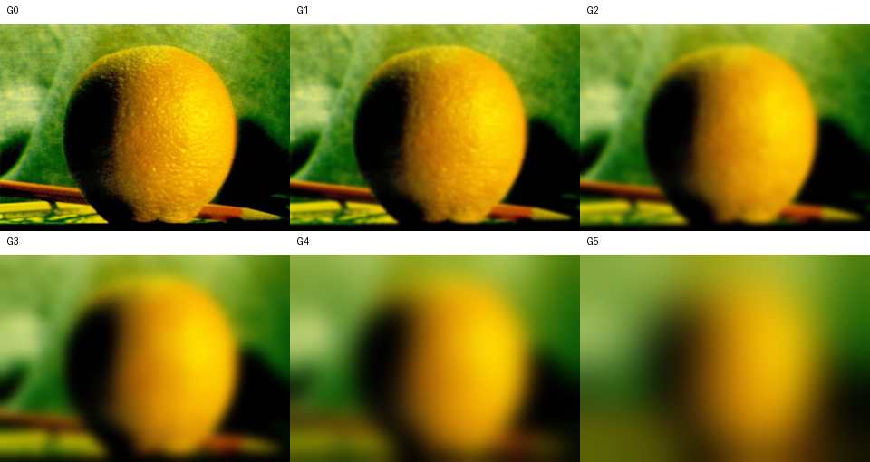
Orange Gaussian Stack
G0–G5, from the original to the coarsest blur.
Laplacian Stacks
The first bands contain the fruit's surface texture and sharp outline. Later bands contain broader changes around the highlights and sides. Adding the bands and the final blurred level recovers the original image: the intermediate Gaussian levels cancel between adjacent differences.
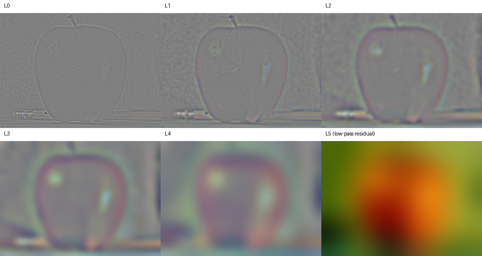
Apple Laplacian Stack
L0–L4 are frequency bands; L5 is the low-pass residual.
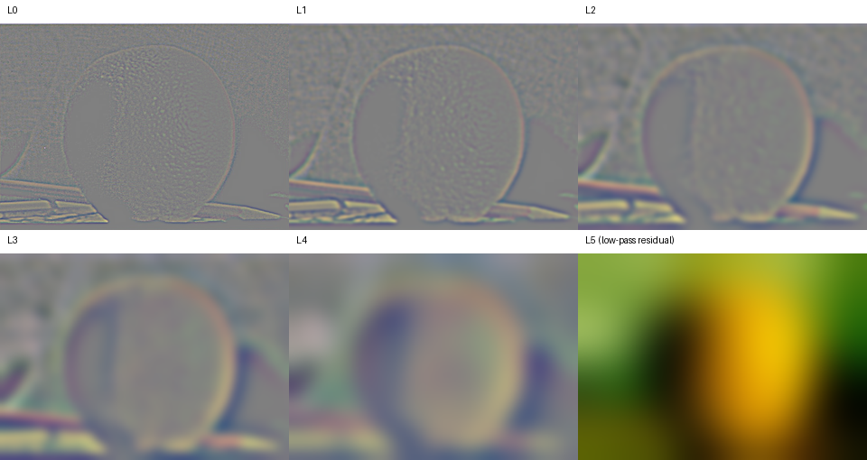
Orange Laplacian Stack
L0–L4 are frequency bands; L5 is the low-pass residual.
Figure 3.42 (a)–(l): Stack Version
For the oraple, a mask selects the apple on the left and the orange on the right. Blurring that mask at the same scales as the images gives a narrow join for the fine bands and a wider join for the coarse ones. Each pair of bands is weighted by its corresponding mask, added, and then summed with the remaining blurred level.
Rows one to three show levels 0, 2, and 4. The columns contain the apple contribution, orange contribution, and their sum. The last row reconstructs each column using all six levels. This follows Figure 3.42 using stacks rather than downsampled pyramids.
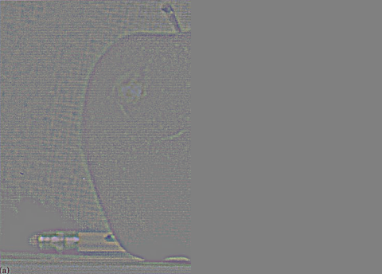
(a) Apple contribution
Fine band, L0.
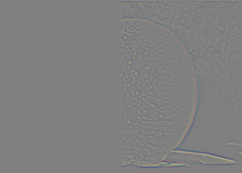
(b) Orange contribution
Fine band, L0.
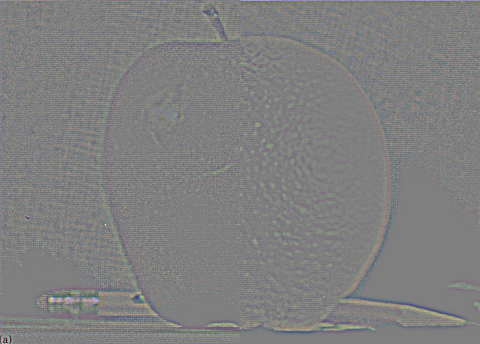
(c) Combined band
Fine band, L0.
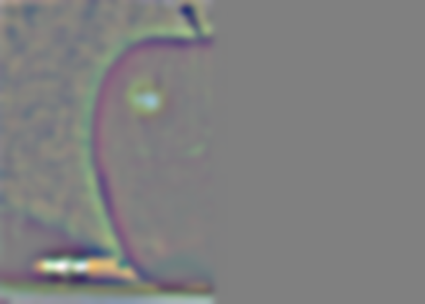
(d) Apple contribution
Medium band, L2.
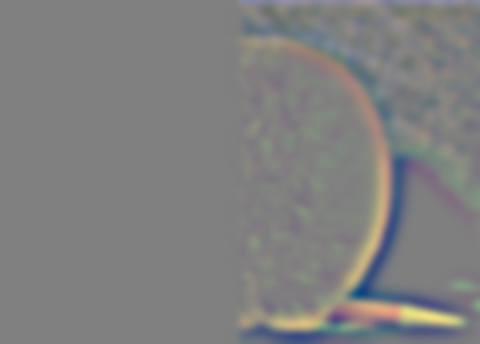
(e) Orange contribution
Medium band, L2.
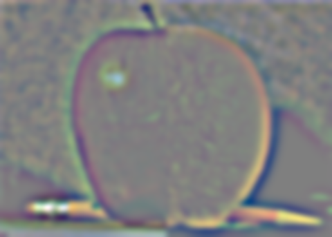
(f) Combined band
Medium band, L2.
(g) Apple contribution
Coarse band, L4.
(h) Orange contribution
Coarse band, L4.
(i) Combined band
Coarse band, L4.
(j) Summed apple contribution
All bands plus the low-pass residual.
(k) Summed orange contribution
All bands plus the low-pass residual.
(l) Oraple
All bands plus the low-pass residual.
The final fruit keeps the apple and orange textures on either side, while their colors meet more gradually at the center. The band images show why: the broad changes cross the seam farther than the fine texture does.
Part 2.4: Multiresolution Blending
Separate the image scales: Build the Gaussian and Laplacian stacks for both inputs using the six levels from 2.3.
Build the mask stack: Start with the binary mask and blur it at the same scales. White selects the first image and black selects the second.
Blend each level: Multiply the first image's band by the mask and the second image's band by its complement, then add the contributions.
Reconstruct: Sum the blended bands, including the last blurred level. This lets the broad lighting transition spread farther than the fine detail.
The apple/orange result in 2.3 uses a straight split. For each custom pair, the binary mask selects pixels to the left of a boundary that follows one gentle sine wave down the image, centered at half the width. The sideways variation is 4% of the width for the drinks and 5.5% for the landscapes, placing the join through the cups and between the landscape subjects.
Custom Blend 1: Iced + Hot Drink
The cups were photographed at different sizes and heights. Matching their center positions and heights brings the bodies of the cups closer before blending. After cropping to the shared area, the mask keeps the iced drink on the left and the hot drink on the right.
Input A: Iced Drink
Aligned and cropped.
Input B: Hot Drink
Cropped to the same canvas.
Curved Mask
White: iced drink. Black: hot drink.
Direct Cut
The binary mask applied without multiresolution blending.
Grayscale Blend
Same frequency weights; color removed.
Color Multiresolution Blend
Selected result.
Compared with the direct cut, the blend makes the brightness change through the cup and background less abrupt. Alignment helps the cup bodies meet, but the lids and printed designs still differ. Those mismatches remain visible even after the lighting transition is softened.
Color is useful here because it separates the brown iced drink from the pale hot-drink cup and retains the warmer night lighting. The grayscale version keeps the shape and texture, but loses those differences. We kept color in both inputs and used the same mask for all three channels.
Drink Blend: Laplacian Contributions
As in Figure 10 of Burt and Adelson, the rows below show fine, medium, and coarse bands at levels 0, 2, and 4. Each row contains the iced-drink contribution, hot-drink contribution, and their sum. The last row adds all six levels to reconstruct the two masked contributions and the final blend. Gray has been added to the band images so negative differences can be seen.
(a) Iced drink contribution
L0.
(b) Hot drink contribution
L0.
(c) Combined band
L0.
(d) Iced drink contribution
L2.
(e) Hot drink contribution
L2.
(f) Combined band
L2.
(g) Iced drink contribution
L4.
(h) Hot drink contribution
L4.
(i) Combined band
L4.
(j) Summed iced drink contribution
All bands plus the residual.
(k) Summed hot drink contribution
All bands plus the residual.
(l) Reconstructed blend
All bands plus the residual.
Custom Blend 2: Coast + Mountains
The landscape images were cropped to the same size without stretching them. The boundary curves between the two people so that neither is cut in half, keeping the coast on the left and the mountain scene on the right.
Input A: Coast
Input B: Mountains
Curved Mask
Direct Cut
Color Multiresolution Blend
The join is softer than the direct cut, and both people remain clear, but the result still looks like two different places joined together. The ocean horizon does not line up with the mountain terrain. A broader lighting transition helps with the sky colors, but does not hide that difference in structure.